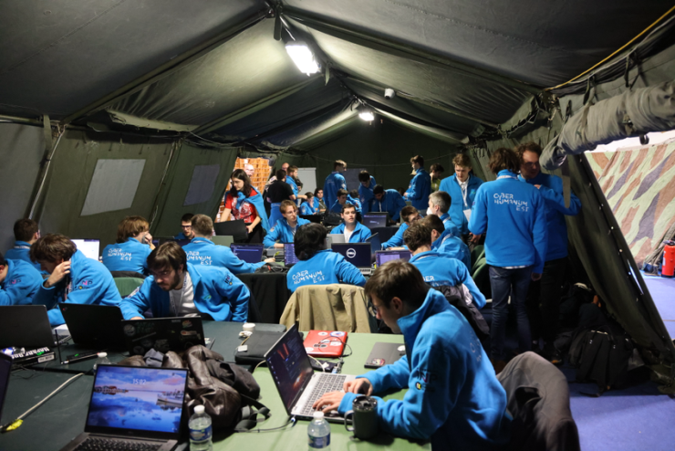
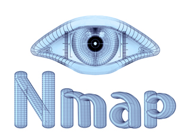

Ⅱ - Objectif Faille
Une fois les sites et services trouvés, nous devons juste trouver des failles. Nous avons utilisé de nombreux outils pour cela.
Avec ces outils, nous avons pu trouver des failles dans les services et, de là, les exploiter.
Le positionnement dans la tente était primordial, l'attaque devant absolument être sur un switch donnant des IP fixes afin de pouvoir être bloquée par l'équipe adverse.
Les deux premières tables sont pour l'Attaque, les deux suivantes sont pour la Défense et une au fond pour l'Influence.
Une table derrière le photographe est réservée pour les capitaines et lieutenants.
Une règle extrêmement importante durant cet exercice est le respect de la hiérarchie. En effet, chaque action, chaque attaque devait être approuvée par les capitaines puis le staff. Pour ce faire, nous avions un site, start.che, qui permettait de faire des tickets pour demander au staff d'accepter des actions. Nous avons mis en place un salon Discord pour que chaque personne puisse demander de faire quelque chose, que les capitaines acceptent, puis qu'une personne désignée remplisse un ticket et donne la réponse du staff.
Par exemple, le ticket suivant a été refusé par le staff, car il était jugé qu'il bloquerait trop l'avancée de l'équipe adverse.
En utilisant l'outil NMAP, nous avons pu cartographier le réseau de l'équipe CRYPTANGA.
À partir de ce que nous avons trouvé, nous avons fait un document contenant tous les sites web et services trouvés sur leur réseau.
Une fois les sites et services trouvés, nous devons juste trouver des failles. Nous avons utilisé de nombreux outils pour cela.
Avec ces outils, nous avons pu trouver des failles dans les services et, de là, les exploiter.
Autre grande partie de l'attaque, les FLAGS - des challenges lancés par le staff rapportant des points. Certains se récupéraient en faisant tomber des infrastructures, d'autres en défendant/attaquant du matériel ennemi (pour nous, en attaquant les trains cryptangais).
De plus, d'autres challenges ont été proposés sur Discord, rapportant aussi des points. Malheureusement, nous n'avons pas réussi à les faire.

Afin d'augmenter l'intérêt au fur et à mesure de l'exercice, certaines attaques étaient interdites au début, puis autorisées. Par exemple, le DOS a été autorisé le mercredi 28 janvier à 5 h du matin !
Voilà à quoi ressemble une capture Wireshark lorsque nous faisons une attaque DOS sur une cible (10.140.99.88).
Mais attention ! Si nous faisions une attaque non autorisée, nous perdions des points ! (Cryptanga en a fait les frais !)